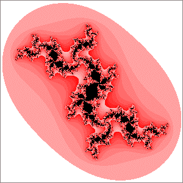
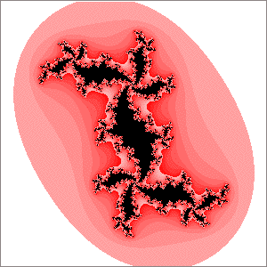

| 17. For (a) some branch points have four branches, some have three. Every branch point of a Julia set for a point in a disc attached to the main cardioid of the quadratic Mandelbrot set has the same number of branches, so (a) cannot be a Julia set of a point in a disc attached to the main cardioid. |
| Every branch point of (b) appears to have four branches, so this could be the Julia set of a disc attached to the main cardioid. |
| (a) (b) |
Return to Homework 10 Practice.